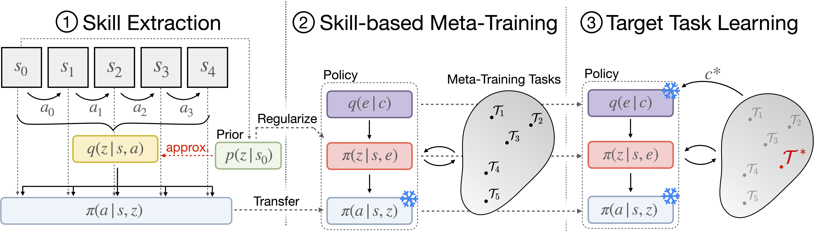
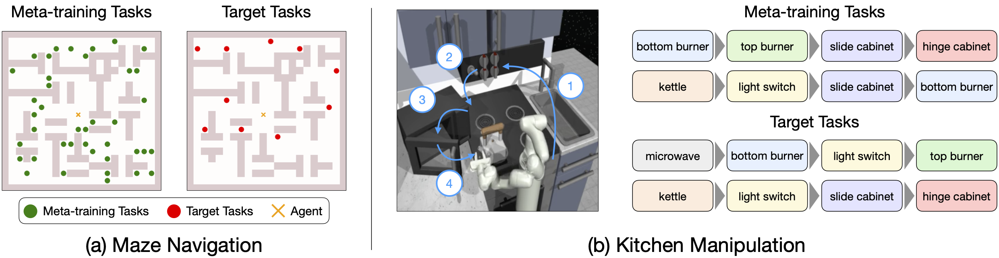

We devise a method that enables meta-learning on long-horizon, sparse-reward tasks, allowing us to solve unseen target tasks with orders of magnitude fewer environment interactions. Our core idea is to leverage prior experience extracted from offline datasets during meta-learning. Specifically, we propose to (1) extract reusable skills and a skill prior from offline datasets, (2) meta-train a high-level policy that learns to efficiently compose learned skills into long-horizon behaviors, and (3) rapidly adapt the meta-trained policy to solve an unseen target task. Experimental results on continuous control tasks in navigation and manipulation demonstrate that the proposed method can efficiently solve long-horizon novel target tasks by combining the strengths of meta-learning and the usage of offline datasets, while prior approaches in RL, meta-RL, and multi-task RL require substantially more environment interactions to solve the tasks.
Overview
We aim to enable meta-RL on long-horzion, sparse reward tasks by leveraging prior experience in the form of offline experience. Below we describe the three stages of our algorithm.

1. Skill Extraction
We learn a set of reusable skills from the offline dataset using the skill extraction approach proposed in Pertsch et al. (SPiRL). We jointly train (1) a skill encoder q(z | s, a) that embeds a K-steps trajectory randomly cropped from the sequences in the offline dataset into a low-dimensional skill embedding z, and (2) a low-level skill policy π(a | s, z) that is trained with behavioral cloning to reproduce the action sequence given the skill embedding.
2. Skill-Based Meta Training
We propose a skill-based off-policy meta-RL algorithm, based on PEARL (Rakelly et al.). On a set of meta-training tasks we train a task-encoder that takes in a set of sampled transitions and produces a task embedding. We then leverage our learned skills by training a task-embedding-conditioned policy over skills instead of primitive actions: π(z | s, e), thus equipping the policy with a set of useful pre-trained behaviors and reducing the meta-training task to learning how to combine these behaviors instead of learning them from scratch.
3. Target Task Learning
We rapidly adapt the meta-trained policy on the target task by rolling out the policy and collecting a small set of conditioning transitions. We encode this set of transitions into a target task embedding and condition our meta-trained high-level policy on this encoding. This allows it to very quickly narrow its skill distribution to those skills that solve the task. To further improve the performance on the target task, we can fine-tune the conditioned policy with target task rewards.
Environments

We evaluate our proposed framework in two domains that require the learning of complex, long-horizon behaviors from sparse rewards. These environments are substantially more complex than those typically used to evaluate meta-RL algorithms.
(a) Maze Navigation: The agent needs to navigate for hundreds of steps to reach unseen target goals and only receives a binary reward upon task success.
(b) Kitchen Manipulation: The 7DoF agent needs to execute an unseen sequence of four subtasks, spanning hundreds of time steps, and only receives a sparse reward upon completion of each subtask.
Rapid Target Task Learning
Our approach, SiMPL (Skill-based Meta-Policy Learning), rapidly converges on the target task. In contrast, prior works that use pre-trained skills (SPiRL) or multi-task RL on the training tasks explore well but fail to converge quickly on the target task. Prior meta-RL approaches that do not leverage pre-trained skills (PEARL) struggle to solve the long-horizon, sparse reward tasks even during meta-training and thus fail on the target tasks.
@inproceedings{nam2022simpl,
title={Skill-based Meta-Reinforcement Learning},
author={Taewook Nam and Shao-Hua Sun and Karl Pertsch and Sung Ju Hwang and Joseph J. Lim},
booktitle={International Conference on Learning Representations (ICLR)},
year={2022},
}
{kind=link}